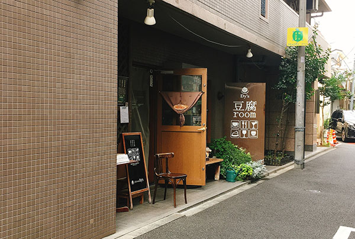
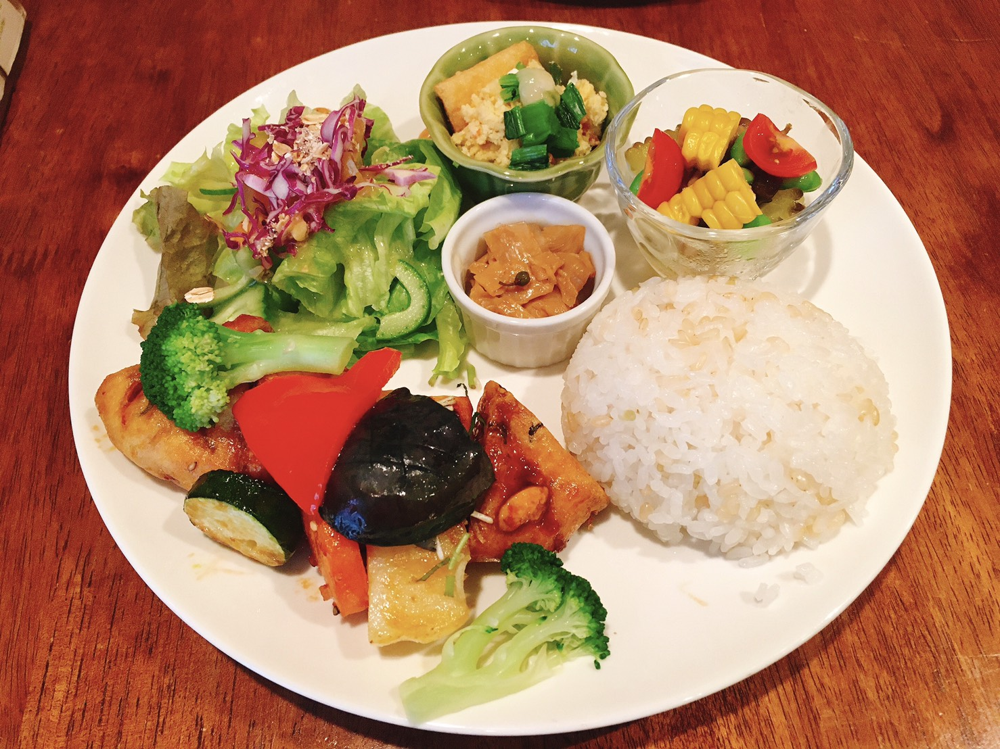
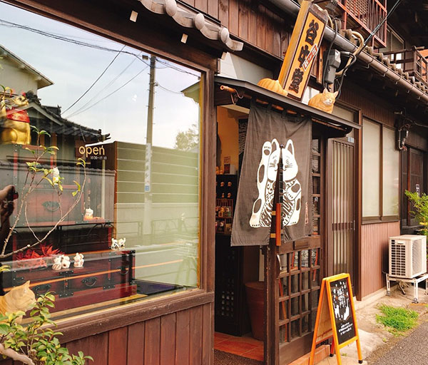
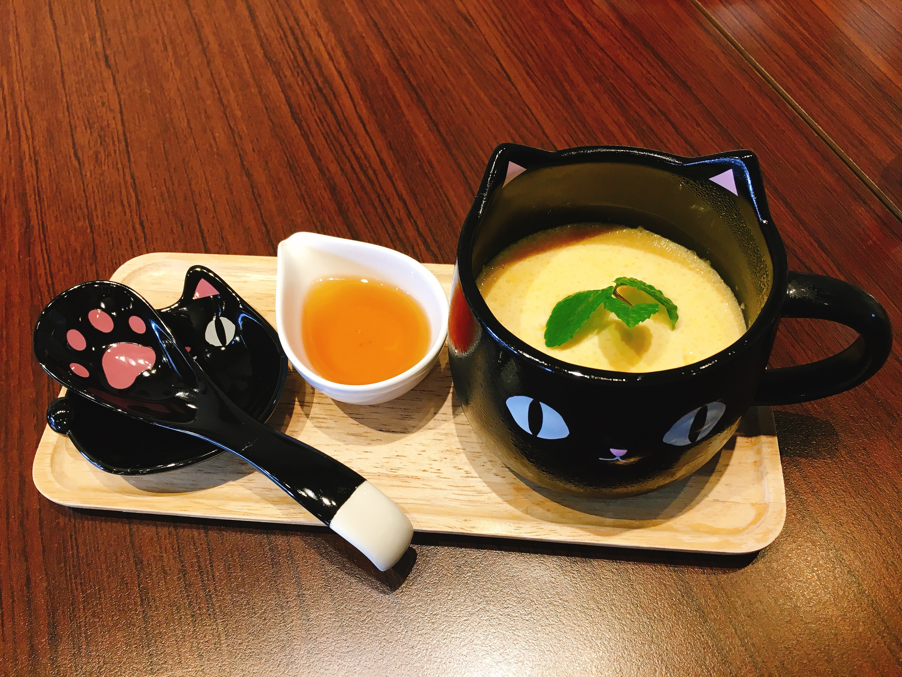

東京都文京区の町名。東京都区部のほぼ中心に存する文京区の北東端、JR東日本山手線の内側に位置している。
特に、千駄木駅と日暮里駅の間にある谷中銀座商店街は、人情あふれる人々と趣のある建物が多く、まさに古き良き日本そのもの。


豆腐屋の娘として生まれ育ったオーナーが手がける、豆腐をメインに据えたランチが楽しめるお店。
素朴で優しい味付け、でもお腹は満たされる幸せな空間。早めに訪れないと満席必須。


千駄木 谷中にある『猫衛門』。木造長屋を活かしたお店。
手作り招き猫の絵付けも楽しめる体験型カフェ。珈琲などのドリンク類や猫をモチーフにしたスイーツなど提供する。